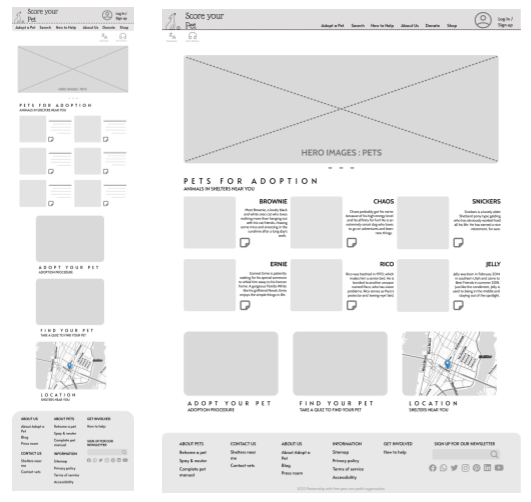
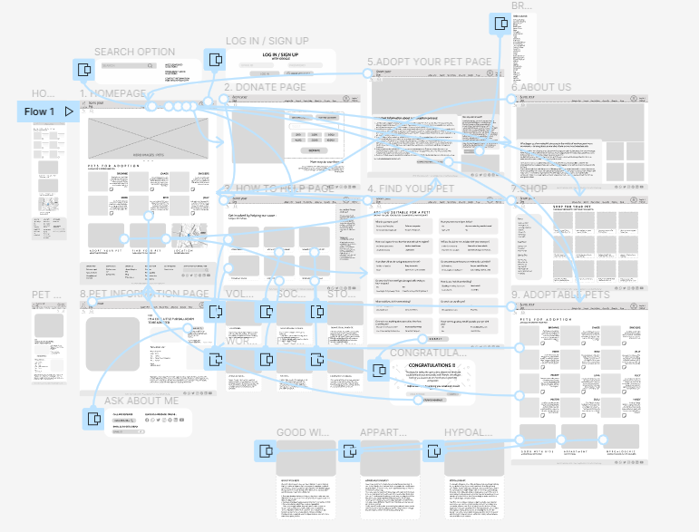
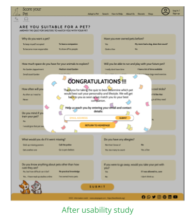
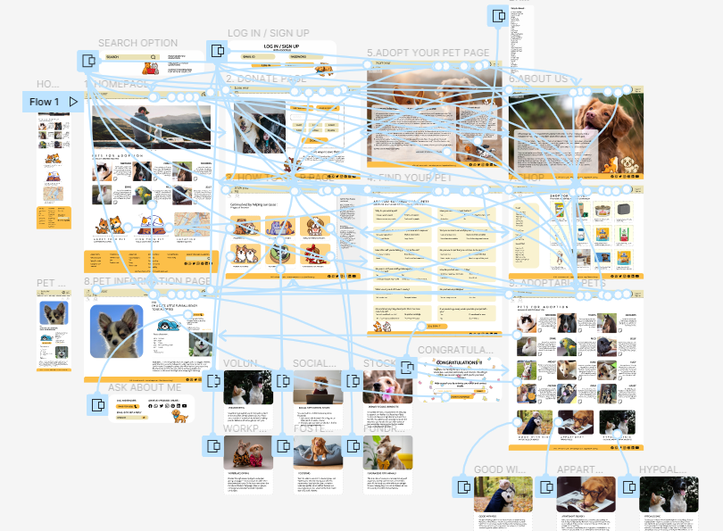

The Product
The Score Your Pet app is an app that helps abandoned pets in shelters get adopted. It connects pet owners to shelters near them and helps them gauge compatibility. It also helps new pet owners by providing articles and a guidebook on how to integrate a pet into your life.
The problem:
The goal of the Score Your Pet app is to be able to gauge the compatibility of a pet with the future pet owner and find a match near the pet parent. It also provides additional information as well as a shopping site to provide requirements for the pet.
The goal:
To determine the difficulties a user encounters during art auctions and attending auctions and figure out the specific challenges users face when they try to place bids and successfully attain the art of their choice.
User research: summary
I conducted user interviews, which I then turned into empathy maps to better understand the target user and their needs. I discovered that many target users are looking for a lifelong companion and want to adopt pets instead of going to a breeder. However, many shelter websites are overwhelming and confusing to navigate, which frustrates many target users. This caused the user to abandon their journey to adopt a pet and leaves many shelter animals without a home.
Navigation: Shelter websites do not have the best way to navigate through the website. The final goal of contacting a shelter to inquire about a pet is often lost due to this.
Compatibility Quiz: The lack of compatibility quiz can allow for compatibility error between pet parent and pet. This can lead to future pain.
Information: Online shelter websites do not have shopping links or any articles to guide user through the process of adoption.
Persona
Problem statement:
Tara is a social media manager who is new to town and wants to adopt a lifelong companion. She needs a website that will help her navigate through the process of adoption and find her a good match for her personality and schedule.
“A dog is the most loyal companion anybody could ask for and is absolutely adorable.”
Who Is She ?
Tara works for a high-profile sneaker brand as their social media manager in the centre of a metropolitan city. She has a very erratic schedule and often works on multiple projects simultaneously. She is linguistically challenged and often finds it hard to communicate with many locals. This app will help her save time and energy as she will not have to suffer through the long process of adopting a pet. However, many apps need better translation software for all languages.
Needs Addressed by the App
To adopt a pet compatible with her personality. To adopt from a shelter rather than a breeder. To minimize time spent on: going to multiple shelters to find her compatible pet and the process fo adoption.
Pain points in exsisting apps
Complicated adoption process and the unavailable support. It does not accommodate people who are not linguistically challenged. There are no compatibility tests to prove owner-pet compatibility.
Paper Wireframes
Next, I sketched out paper wireframes for each screen in my app, keeping the user pain points about navigation, browsing, and checkout flow in mind. The home screen paper wireframe variations to the right focus on optimizing the navigation experience of users.
Prototypes and Mockups
Digital Prototypes
Moving from paper to digital wireframes made it easy to understand how the redesign could help address user pain points and improve the user experience.Prioritizing useful button locations and visual element placement on the home page was a key part of my strategy.
The transition from website to app was more of a graceful degradation. It has a similar layout and therefore there is more negative space around the last three options on the page.
Low Fidelity Prototype
To create a low-fidelity prototype, I connected all of the screens involved in the primary user flow of adding an item to the cart and checking out. made sure to listen to feedback, and I implemented several suggestions in places that addressed user pain points.
Link To Lo-Fi Prototype » Mockups
Based on the insights from the usability study, I made changes to improve the site's checkout flow. One of the changes I made was adding the confirmation of quiz completion and the option to add their information for the shelters to contact them.
High-Fidelity Prototype
The high fidelity prototype is accopanied by interactivity added in by Figma.
My hi-fi prototype followed the same user flow as the lo-fi prototype, and included the design changes made after the usability study.
Link To Hi-Fi Prototype »Usability study: findings
I conducted two rounds of usability studies. Findings from the studies helped guide the designs from wireframes to mockups.
Navigation bar.
The users preferred almost all the functions to be linked through the navigation bar.
Conclusion
The users were confused as the final conclusion of the shelter reaching the pet parent happens on another platform and at the pace of the shelter recipient.
Information
Many screens in the prototype have (essential) information. The impatient users were not too interactive with the reading material.
Mockup Frames
Additional Research
-
Accessibility Considerations:
- The headings that were used in the design were of different sized text for clear visual hierarchy as well as for visually impaired users. - Alt text was used in every symbol as well as image for people using screen readers and for the readers. - Text to speech and translate functions were provided on every screen (with the navigation bar) for people who do not speak english or for people who are visually impaired.
-
Impact made by the app:
Users shared that the design was intuitive to navigate through, more engaging with the images, and demonstrated a clear visual hierarchy. It also provided other aids for visually or linguistically challenged users.
-
What I learned:
I learnt that a flow can have multiple points of entry and multiple functions but end up with one singular goal. I also found that one small design change (colour, typography, size) can have a huge impact on the overall design.
-
Next steps for the project:
Additional information on contacting the shelters for adoption, legal process of adopting a pet . Conducting a usability study on a larger audience and see the success rate of pet adoption through the site. Provide more features that promote engagement with other pet owners and people in the same community.